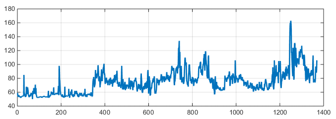

Monitoramento e regulação do ritmo cardíaco
Diretório:
, usuário logado:
.
ECG:
Aquisição realizada a 240 Hz, para os últimos 6 segundos.
Baixar dados
Frequência Cardíaca (FC):
Cálculo da frequência cardíaca (em BPM) a partir dos dados de ECG para as últimas 24 horas.
Baixar dados
<< GRÁFICO COM A VARIAÇÃO DA FREQUÊNCIA CARDÍACA A CADA SEGUNDO >>
imagem exemplificando:

Detalhes dos alarmes:
A cada taquicardia detectada (FC > 100) é ativado um alarme e iniciado o protocolo de estimulação do nervo vago.
Informações sobre os horários de ativação se encontram abaixo.
Baixar dados
tabela de exemplo:
| Data |
Horário |
FC antes (bpm) |
FC depois (bpm) |
| 2023-07-30 |
14:00:32 |
111 |
89 |
| 2023-07-30 |
15:12:26 |
109 |
94 |
| 2023-07-30 |
17:40:00 |
117 |
93 |